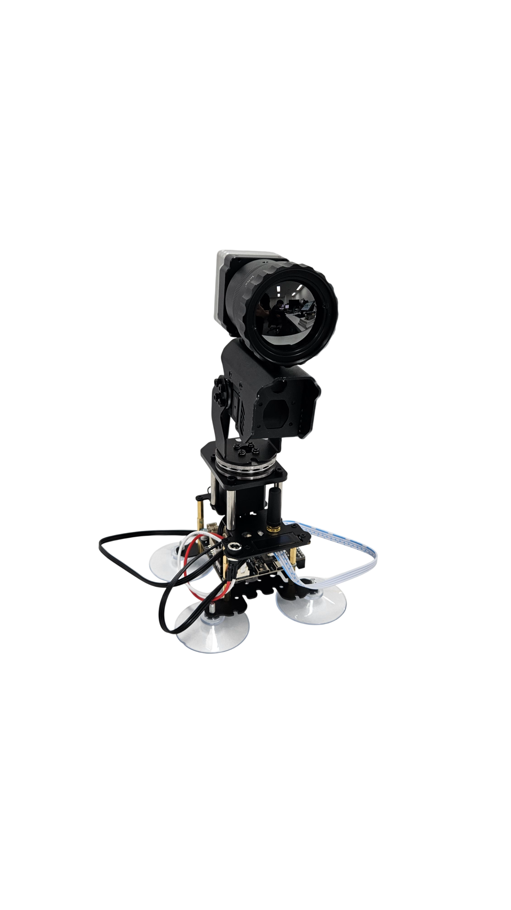
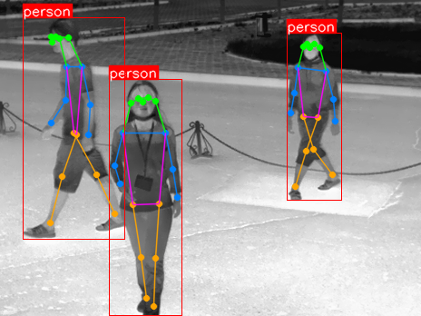
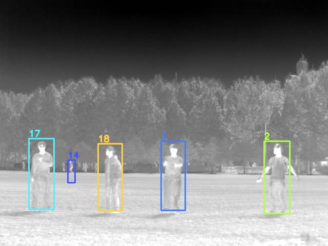

윤오름팀장
시스템 설계 · 통신
GUI · 짐벌 제어
윤오름 · 김재남 · 윤관 · 정하건 · 홍정호

시스템 설계 · 통신
GUI · 짐벌 제어

Runtime 구현
멀티스레드 파이프라인

적외선 모델 학습·경량화
짐벌 튜닝·응답 실측

추적 알고리즘
성능 검증 · 개선

Runtime 최적화
NPU · 추론 가속
LWIR: 장파적외선 열영상 · DEEPX NPU: 보드에서 검출 모델을 실행하는 가속기
열영상 수신
보드에서 영상 처리
PC에서 대상 선택
카메라 방향 제어
입력 주기 약 33.3 ms
최소·최대 거리 · 실측 후 기입
33 ms 이내 · 입력 버림 0 · 순서 오류 0
재포착 · 상태 확인 · 수동 개입 · 정지
영상 수신 · NPU 검출
ByteTrack · OC-SORT · BoT-SORT
표적 위치 · PC 명령·상태

검출 누락 →
추적 입력도 사라짐



보고 구간 +1.26~+10.26%p
보고 구간 −9~+10회
학습한 모델
모델 연산 구조 내보내기
대표 영상으로 8비트 정수 변환
M1에서 실행할 모델 파일
검출 점수별 2단계 매칭
실제 관측으로 가림 뒤 연결
박스 상태·점수 반영 매칭
재현율도 87.7%로
BoT-SORT의 85.3%보다 높음
다음 프레임 준비
요청 제출·완료
추적·영상 전달
약 30 FPS · 모드별 65초
처리 대기 중 영상 1장 누락
처리 순서 오류 0
장시간 실행 · 입력 버림0
33 ms 초과5 · 최대44.582 ms
p95 27.16 ms
초과4 / 805장
p95 42.52 ms
초과217 / 592장
지금 얼마나 벗어났나
얼마나 오래 남았나
이번 설정: Ki = 0얼마나 빠르게 변하나
누적 보정에 의한 넘침 가능성 → PD와 불감대로 안정성 우선
선택 ID 위치로 추종
방향 입력으로 조작
입력 상실·오래된 관측 확인
| 가상 시험 · 재포착 차이 | 95% 구간 |
|---|---|
| 속도로 예측: +20%p | +7 ~ +32%p |
| 장치의 속도+칼만 예측: +6%p | −11 ~ +21%p |
속도 예측: 다시 찾은 비율 상승
속도+칼만 예측: 효과 미확정
가속 한도 60→150단계/초: 추종 가능 속도
약750 → 900 px/s
화면 가장자리 속도 1.6배: 급정지
지나침 11 → 35 px
넓게·좌우 훑기: 보류
좁게 보기: 기능 시험만


상체 관측은 ID 연결·조준에 사용
최종 알고리즘 · BoT-SORT
접수 → 완료 응답
선택 ID · 모드 확인
운용자 개입
추적기 번호 선택
Runtime에 변경 요청
카탈로그 설정 · 프레임 경계
Accepted → Completed
모델·BoT-SORT·제어
선택 → 추종 → 가림
수동 전환 → 정지
표적 선택 · 이동 · 가림 · 수동 전환 · 정지
프레임 교대 40.47 ms 대비
실카메라 · 각 65초
기존 호출 26.33 ms 대비
무인 실카메라 · 약 1,800장
입력 버림·순서 오류 0
33 ms 초과 5장
| 분야 | 문제 | 선택한 설계 | 확인한 성과 |
|---|---|---|---|
| 검출 | 상체·전신 박스 범위 혼재 | 상체 기준 통일·현장 학습 | 박스 정확도(AP) 36.04 → 46.28%열화상 검증 934장 · 이전 모델 비교 |
| 추적 | ID 변경·연결 품질의 절충 | BoT-SORT 선정·매칭 기준 조정 | ID 변경 1,001 → 566회동일 PC · BoT-SORT 설정 비교 |
| NPU 처리 | 프레임 처리 결과의 지연 | 같은 프레임을 두 NPU로 분할 | p95 40.47 → 25.71 ms서버 시험 · 각 65초 · 분할에서 1장 버림 |
| 짐벌 제어 | 정지 뒤 반복 반전 | 작은 오차를 무시하는 범위 확대 | 상하 반전 4 → 1회조건별 1회 · 별도 가로 시험은 뒤처짐 증가 |